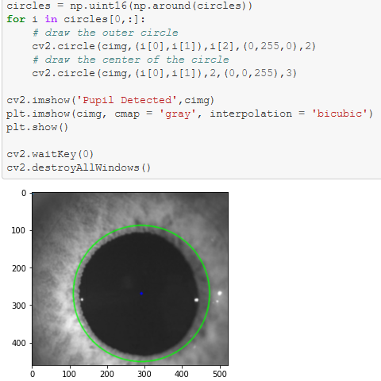

Python, Numpy, OpenCV2
The rate at which a pupil dilates is a biomarker for Parkinson’s disease. Ophthalmologists can analyze the pupil dilation rate by shining a light at the eye and observing how the pupil reacts when the light is taken away. A five-minute video of the procedure takes a medical student a few days to go through, analyzing each frame of the video.
Instead of this, we wanted to create a program to help automate the process. The optometrist can analyze the data and properly diagnose with the patient with early onset Parkinson’s, leading to preventative treatment for the patient.
The program automatically selects the pupil and tracks the center. Then, it returns the rate of change of the pupil over time. The user can confirm the selection is correct, or fix the selection when needed.
I and my cohorts, utilized Matplotlib, NumPy, Pillow, PyLab, and OpenCV2 in order to optimize and analyze custom pupil images sent over by the Stritch School of Medicine.
Github Repository: project code.